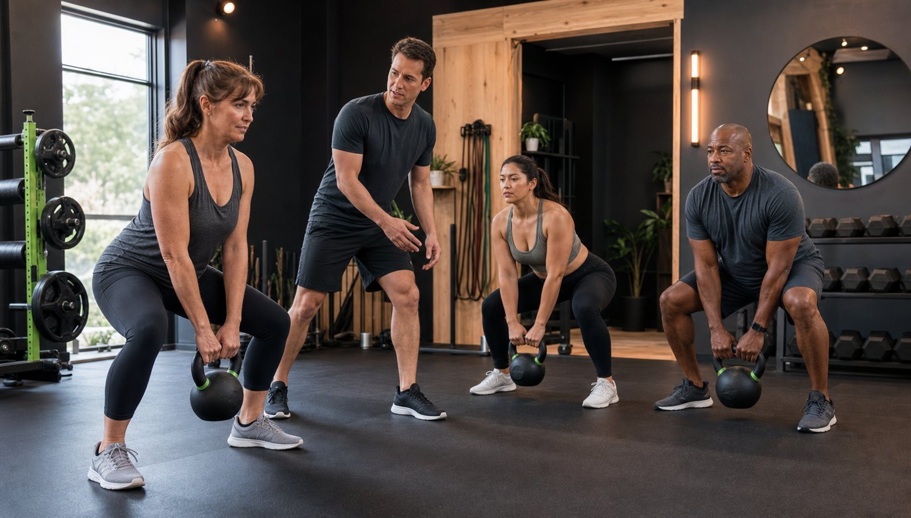
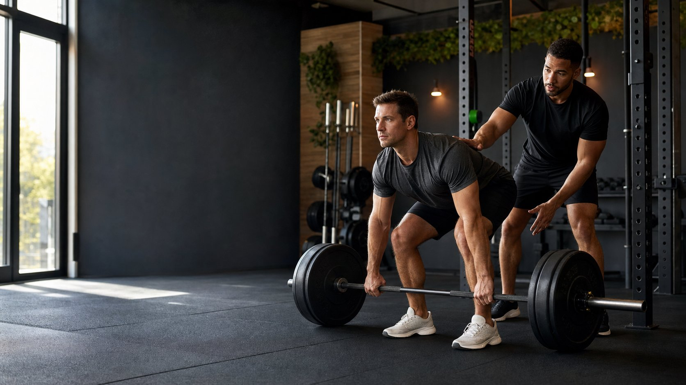

Training choices should connect directly to what the client wants to improve.
About Tory and John
Experience earned in training and in life.
Tory's competitive journey reflects the discipline, resilience, and precision she brings to individualized coaching.

Tory's story
A lifetime of strength, discipline, and resilience.
Tory began her strength journey at age 15, breaking barriers during an era when women were rarely seen in the weight room. At 26, while raising her three-year-old son, she entered her first bodybuilding competition and took home first place.
After years dedicated to raising her three children as a single mother while maintaining her fitness, Tory made a powerful return to the stage at age 41. Driven by precision, disciplined nutrition, and unwavering focus, she advanced from regional events to the national stage.
Tory's journey took a dramatic turn when she faced back-to-back life-altering events: major neck surgery in 2023, followed by a severe car accident one year later. Showing extraordinary resilience through years of rehabilitation, she refused to let setbacks define her career.
In August 2025, Tory made her IFBB Pro debut at the Tampa Pro, placing second in Women's Bodybuilding Over 50 and third in Over 45. Today, Tory continues to inspire athletes by proving that dedication, grit, and passion know no age limit.
View training programs →Training philosophy
Personalized, practical, purposeful.
Experience level, schedule, strengths, and limitations all shape the approach.
Clear instruction helps clients train with greater confidence and intention.
Programs should respond to progress, feedback, and changing priorities.
Competitive milestones
From the national stage to IFBB Pro.
Tory's competitive record reflects decades of focused training, thoughtful nutrition, and persistence through adversity.
2020At age 48, placed second in Women's Bodybuilding Over 40 at the NPC Masters National Championships.
2021At age 49, earned IFBB Pro status in the Over 40 and Over 45 divisions at the NPC Masters USA Championships.
2023-24Returned to intensive rehabilitation after major neck surgery and a serious car accident.
2025Placed second in Over 50 and third in Over 45 during her professional debut at the Tampa Pro.
Coaching with Tory and John
Different goals require different plans.
Tory and John bring more than 25 years of training experience to their work with beginners, athletes, busy adults, and dedicated bodybuilders. Every program is personalized and delivered through in-person coaching.
- Bodybuilding coaching
- Sports-specific training
- Strength development
- General fitness and conditioning
- Beginner fitness support
- Individualized programming
- Nutrition guidance

Your first step